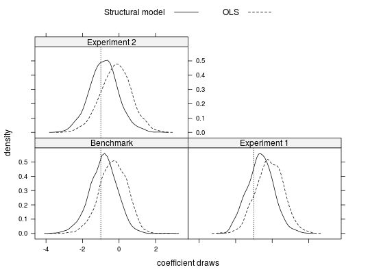

data(klein15b)
Results of Monte Carlo Simulations in Klein (2015b) for 40 two-group markets.
This list contains the following elements:
Klein, T. (2015a). Does Anti-Diversification Pay? A One-Sided Matching Model of Microcredit. Cambridge Working Papers in Economics, #1521.
Klein, T. (2015b). Analysis of stable matchings in R: Package matchingMarkets. Vignette to R package matchingMarkets, The Comprehensive R Archive Network.
## Plot of posterior distributions data(klein15b) tpe <- c(rep("Benchmark",2), rep("Experiment 1",2), rep("Experiment 2",2)) for(i in seq(1,length(klein15b)-1,2)){ ntu <- klein15b[[i]] ols <- klein15b[[i+1]] ntu <- ntu[,colnames(ntu) == "beta.wst.ieq"] ols <- ols[,colnames(ols) == "beta.wst.ieq"] if(i == 1){ draws <- data.frame(Structural=ntu, OLS=ols, type=tpe[i]) #, stringsAsFactors=FALSE } else{ draws <- rbind(draws, data.frame(Structural=ntu, OLS=ols, type=tpe[i])) } } library(lattice) lattice.options(default.theme = standard.theme(color = FALSE)) keys <- list(text=c("Structural model","OLS"), space="top", columns=2, lines=TRUE) densityplot( ~ Structural + OLS | type, plot.points=FALSE, auto.key=keys, data = draws, xlab = "coefficient draws", ylab = "density", type = "l", panel = function(x,...) { panel.densityplot(x,...) panel.abline(v=-1, lty=3) })
## Not run: ------------------------------------ # ## Modes of posterior distributions # # ## load data # data(klein15b) # # ## define function to obtain the mode # mode <- function(x){ # d <- density(x,bw="SJ") # formatC(round(d$x[which.max(d$y)], 3), format='f', digits=3) # } # # ## Benchmark study # apply(klein15b$exp.5.5.ntu, 2, mode) # apply(klein15b$exp.5.5.ols, 2, mode) # # ## Experiment 1 # apply(klein15b$exp.6.5.ntu, 2, mode) # apply(klein15b$exp.6.5.ols, 2, mode) # # ## Experiment 2 # apply(klein15b$exp.6.6.ntu, 2, mode) # apply(klein15b$exp.6.6.ols, 2, mode) ## ---------------------------------------------